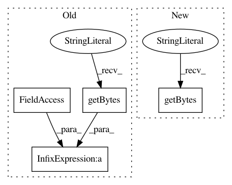

ec9dcf7491c38f3531bfa718b496861ab19bb048,tensorflow_transform/beam/cached_impl_test.py,CachedImplTest,test_non_frequency_vocabulary_merge,#CachedImplTest#,757
Before Change
}
else:
expected_accumulators = {
_TEST_CACHE_VERSION +
b"VocabularyAccumulate[vocabulary]-LM\xf9/\xdb\xa9e\x82\xa9F\x8e\xab\xbe\xd7}\x9d\xd1Ln\xe9":
[
b"["a", [2, [0.0, 1.0], [0.0, 0.0], 1.0]]",
b"["b", [2, [0.5, 0.5], [0.0, 0.0], 1.0]]",
After Change
_encode_vocabulary_accumulator(
b"a", b"[2, [0.0, 1.0], [0.0, 0.0], 1.0]"),
_encode_vocabulary_accumulator(
b"b", b"[2, [0.5, 0.5], [0.0, 0.0], 1.0]"),
_encode_vocabulary_accumulator(
b"global_y_count_sentinel",
b"[4, [0.25, 0.75], [0.0, 0.0], 1.0]"),
In pattern: SUPERPATTERN
Frequency: 5
Non-data size: 4
Instances
Project Name: tensorflow/transform
Commit Name: ec9dcf7491c38f3531bfa718b496861ab19bb048
Time: 2019-08-28
Author: zoy@google.com
File Name: tensorflow_transform/beam/cached_impl_test.py
Class Name: CachedImplTest
Method Name: test_non_frequency_vocabulary_merge
Project Name: tensorflow/transform
Commit Name: a41043126e966b8188f167fa471d68e4daee52ec
Time: 2019-08-06
Author: zoy@google.com
File Name: tensorflow_transform/beam/cached_impl_test.py
Class Name: CachedImplTest
Method Name: test_single_phase_mixed_analyzer_run_once
Project Name: tensorflow/transform
Commit Name: a41043126e966b8188f167fa471d68e4daee52ec
Time: 2019-08-06
Author: zoy@google.com
File Name: tensorflow_transform/beam/cached_impl_test.py
Class Name: CachedImplTest
Method Name: test_caching_vocab_for_integer_categorical
Project Name: tensorflow/transform
Commit Name: cea633a16713ceffe706500fed731d57c509ad58
Time: 2019-10-17
Author: zoy@google.com
File Name: tensorflow_transform/beam/cached_impl_test.py
Class Name:
Method Name:
Project Name: tensorflow/transform
Commit Name: a41043126e966b8188f167fa471d68e4daee52ec
Time: 2019-08-06
Author: zoy@google.com
File Name: tensorflow_transform/beam/cached_impl_test.py
Class Name: CachedImplTest
Method Name: test_non_frequency_vocabulary_merge